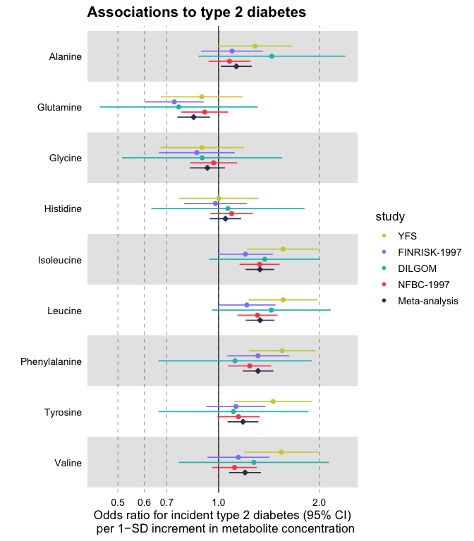

ggforestplot is an R package for plotting measures of effect and their confidence intervals (e.g. linear associations or log and hazard ratios, in a forestplot layout, a.k.a. blobbogram).
The main plotting function is ggforestplot::forestplot() which will create a single-column forestplot of effects, given an input data frame.
The two vignettes Using ggforestplot and NMR data analysis tutorial provide an introduction to creating forestplot visualizations with custom groupings and performing basic exploratory analysis (using demo metabolic data of the Nightingale Health NMR platform).
Installation
You can install ggforestplot from github as shown below (unless already installed, you need to first install devtools):
# install.packages("devtools")
devtools::install_github("NightingaleHealth/ggforestplot")Examples
Below we briefly showcase the usage of ggforestplot with publicly available datasets, which are also included in the package (see A. V. Ahola-Olli et al. (2019)).
Linear associations
Plot a vertical forestplot for linear associations of blood biomarkers to insulin resistance (HOMA-IR), fasting glucose and Body Mass Index (BMI).
# Load tidyverse and ggforestplot
# install.packages("tidyverse")
library(tidyverse)
library(ggforestplot)
# Get subset of example, linear associations, data frame
df_linear <-
ggforestplot::df_linear_associations %>%
dplyr::arrange(name) %>%
dplyr::filter(dplyr::row_number() < 30)
# Forestplot
forestplot(
df = df_linear,
estimate = beta,
logodds = FALSE,
colour = trait,
title = "Associations to metabolic traits",
xlab = "1-SD increment in cardiometabolic trait
per 1-SD increment in biomarker concentration"
)
Odds ratios
Plot a vertical forestplot for odds ratios of blood biomarkers with risk for future type 2 diabetes; visualize all 4 available cohorts and their meta-analysis.
# Get subset of example, log odds ratios, data frame
df_logodds <-
df_logodds_associations %>%
dplyr::arrange(name) %>%
dplyr::left_join(ggforestplot::df_NG_biomarker_metadata, by = "name") %>%
dplyr::filter(group == "Amino acids") %>%
# Set the study variable to a factor to preserve order of appearance
# Set class to factor to set order of display.
dplyr::mutate(
study = factor(
study,
levels = c("Meta-analysis", "NFBC-1997", "DILGOM", "FINRISK-1997", "YFS")
)
)
# Forestplot
forestplot(
df = df_logodds,
estimate = beta,
logodds = TRUE,
colour = study,
shape = study,
title = "Associations to type 2 diabetes",
xlab = "Odds ratio for incident type 2 diabetes (95% CI)
per 1−SD increment in metabolite concentration"
) +
# You may also want to add a manual shape scale to mark meta-analysis with a
# diamond shape
ggplot2::scale_shape_manual(
values = c(23L, 21L, 21L, 21L, 21L),
labels = c("Meta-analysis", "NFBC-1997", "DILGOM", "FINRISK-1997", "YFS")
)